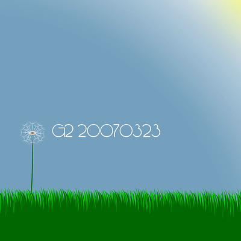
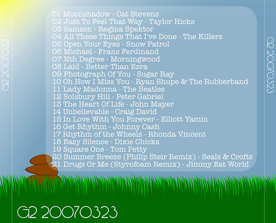

G2 20070323
I made another CD in the G2 series. You can read more about them here. I really enjoy making the CDs and I enjoy giving them to Maria. Recently I've enjoyed spending more time on the actual artwork for the album, although it probably gets the least amount of appreciation, thanks to the digital age in which we live. Like before, I've made the list of songs on the album available for your viewing, not really for your input. You might find a song you like, you might not.
Below, you'll find a copy of all of the songs on the album. All links lead to the iTunes Store, where you can listen to a 30 second snip of each song (except for the song from The Beatles, who aren't in the iTunes Store yet... just give it time).
| Track | Title | Artist | Length |
|---|---|---|---|
| 01 | Moonshadow | Cat Stevens | 2:50 |
| 02 | Just to Feel that Way | Taylor Hicks | 3:10 |
| 03 | Samson | Regina Spektor | 3:10 |
| 04 | All These Things That I've Done | The Killers | 5:02 |
| 05 | Open Your Eyes | Snow Patrol | 5:41 |
| 06 | Michael | Franz Ferdinand | 3:21 |
| 07 | Nth Degree | Morningwood | 3:55 |
| 08 | Laid | Better Than Ezra | 2:28 |
| 09 | Photograph Of You | Sugar Ray | 3:49 |
| 10 | Oh How I Miss You | Ryan Shupe & The Rubberband | 3:16 |
| 11 | Lady Madonna | The Beatles | 2:56 |
| 12 | Solsbury Hill | Peter Gabriel | 4:21 |
| 13 | The Heart Of Life | John Mayer | 3:18 |
| 14 | Unbelievable | Craig David | 3:22 |
| 15 | In Love With You Forever | Elliott Yamin | 4:19 |
| 16 | Get Rhythm | Johnny Cash | 2:14 |
| 17 | Rhythm of the Wheels | Rhonda Vincent | 3:31 |
| 18 | Easy Silence | Dixie Chicks | 4:02 |
| 19 | Square One | Tom Petty | 3:25 |
| 20 | Summer Breeze (Philip Steir Remix | Seals & Crofts | 4:30 |
| 21 | Drugs Or Me (Styrofoam Remix) | Jimmy Eat World | 5:14 |
This is the back artwork for the album. Again, I'm pleased with this album, and I'll spend a bit of time talking about the actual design itself. You can read it if you care about it, and you can skip it if you don't care. Either way, here it comes:
- All the graphics were done by yours truly. I've been working on redesigning the site, so I've gotten a little more versed in actually drawing my own graphics. They're nothing super fantastic, but I can't complain too loudly, considering just how artistically gifted I feel I am. I really like Macromedia/Adobe Fireworks. I think I might need to start venturing into Adobe Illustrator, since I only used the pen tool the entire time.
- The typeface used for each of the "G2 20030323" titles is Feena Casual. I'm using a simliar font in the redesign of the site. I thought it would go well with the graphics I had in mind.
- The typeface used for the track listing was one of my favorites, called American Typewriter. I wanted a slight mix of serif and sans-serif. This choice kept a slightly modern feel, although it does have a retro origin.
- The front and back cover obviously have grass. Maria is really excited for Spring/Summer, and we've had nice weather lately. The combination of those things made me want to have a nice sunny day, with some grass on there. The decorations are slightly different story.
- Although I had sketched some ideas for what I'd like to see for the decorations, I decided on keeping both sides very simple. I like the dandelion, although it is a weed, because it's just a typical thing to find in the grass (at least it always was in our lawns growing up). I had sketched a sunflower as well, but it wouldn't have worked with the scale I wanted.
- The dog poop on the back is because in our complex we have a lot of poop out on the grass. It's actually fairly disgusting, but it's such an integral part of the grass that I couldn't exclude it.
Like the previous G2 album I talked about, this was also probably more information than anybody really wanted to know. Like last time though, I'll contend that this is my site, and I felt like sharing, so here it is on my site.
- Prior: More with Less
- Next: Give 'em a Call